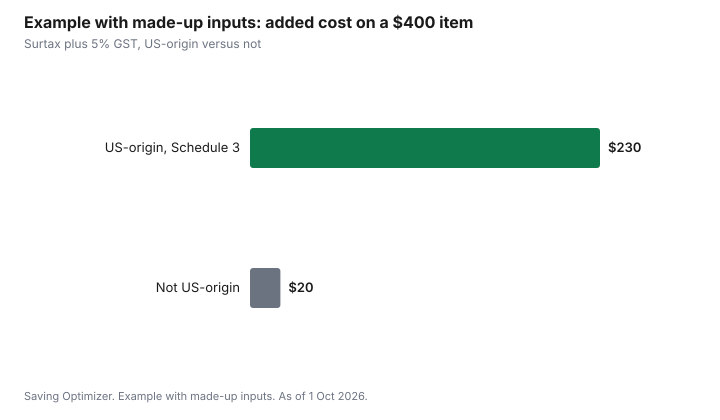

Technology · Canada
Ordering Electronics From the US After Canada's 2026 Counter-Tariffs: Duty, Tax and Warranty

For electronics ordered from the US into Canada, Canada's 2026 counter-tariff applies only to goods that originate in the United States, not to everything shipped from a US store. The United States Surtax Order (2026) took effect on 8 September 2026. It lists smartphones, some data transmission equipment, certain monitors and video game consoles on its 50 percent schedule, while computers under tariff heading 8471 do not appear. Most phones, consoles and laptops are made outside the US, so a US address on the box does not decide the surtax. GST or HST still applies, and so do the return and warranty questions that come with any cross-border order.
Key takeaways
- The surtax applies to goods that originate in the United States and are classified under a tariff item on Schedule 1, 2 or 3. A US shipping address is not origin.
- Schedule 3 (50 percent) includes 8517.13.00 smartphones, 8517.62.00 data transmission machines, 8528.59.90 certain monitors and 9504.50.00 video game consoles.
- Computers under heading 8471 did not appear on the schedules as of 1 Oct 2026. Ask CBSA how your item is classified.
- GST or HST is calculated on the value plus any duty and surtax. CBSA's Example 2: a $150 good at 50 percent owes $75 of surtax and $11.25 of GST.
- A US purchase may be serviced under a US warranty and returned at your cost. Price the return before you order.
What changed on 8 September 2026
The United States Surtax Order (2026), SOR/2026-186, was made on 4 September 2026 and came into force on 8 September 2026. It places a surtax on goods that originate in the United States and are classified under tariff items listed in three schedules: 15 percent for Schedule 1, 25 percent for Schedule 2, and 50 percent for Schedule 3, calculated on the value for duty. Goods in transit to Canada on the day it came into force are excepted.
CBSA explains how it applies in Customs Notice 26-23, dated 7 September 2026. The Department of Finance also published a list of products, but its page says the list may no longer reflect current measures, so the Order on Justice Laws is the text to read. The household counter-tariff overview covers other aisles.
Origin, not the shipping address
The surtax turns on where the good originates. CBSA's notice ties this to whether the goods are eligible to be marked as goods of the United States. A phone assembled in Asia and shipped from a warehouse in Ohio is not a US good for this purpose. A console made in Asia and sold by a US retailer is in the same position.
Read the country of origin on the product page, the box or the invoice. If the seller cannot tell you, ask before ordering. A courier or broker may ask the seller for the same information when the parcel crosses the border.
Which electronics tariff items are on the schedules
These items appeared in the Order's schedules in the consolidation current to 21 September 2026. Classification is CBSA's call, not the retailer's, so treat the descriptions as a guide and ask the Border Information Service if you are unsure.
| Tariff item | General description | Schedule and rate |
|---|---|---|
| 8517.13.00 | Smartphones | Schedule 3, 50% |
| 8517.62.00 | Machines for reception, conversion and transmission of data, including switching and routing apparatus | Schedule 3, 50% |
| 8528.59.90 | Certain other monitors | Schedule 3, 50% |
| 9504.50.00 | Video game consoles and machines | Schedule 3, 50% |
| 8529.90 items | Parts for television, monitor and similar apparatus | Schedule 2, 25% |
| 8544.49.00 | Certain insulated electric conductors (cables) | Schedule 2, 25% |
| Heading 8471 | Computers, including laptops | Not on the schedules as of 1 Oct 2026 |
Other common electronics headings, such as 8518 for headphones and speakers, 8525 for cameras and 8443 for printers, did not appear in the schedules either. That does not make an item free of duty or tax. It means this surtax does not list it.
GST, duty and courier thresholds
GST or HST is charged on imported goods, and CBSA's Customs Notice 26-23 shows it is calculated after the surtax is added. Its Example 2 uses a good with a value for duty of $150 at 50 percent: the surtax is $75, GST at 5 percent is $11.25, and the surtax plus GST is $86.25. Provincial sales tax or HST rates differ, so your number may be higher.
CBSA's low-value shipment page sets thresholds by shipping method. By mail, the threshold is $20. By courier from the US or Mexico, goods up to $40 are free of duty and taxes, goods above $40 up to $150 are duty-free but taxed, and goods above $150 owe both. Those thresholds concern customs duty and taxes. The US clothing orders guide walks through how they interact with the surtax; for electronics, ask the courier or CBSA before relying on a threshold to cover a US-origin item.
Couriers can charge a brokerage or clearance fee on top. Read the courier's fee page or the seller's checkout, and check whether the seller collects duties and taxes at checkout or leaves them for delivery.
Warranty, returns and compatibility
A manufacturer warranty can depend on the country of purchase. Read the warranty terms before you order: some cover the item only in the country where it was sold, or require service there. A Canadian retailer's purchase is serviced in Canada; a US purchase may need to go back across the border.
Returns cost more across the border. Price the return shipping and ask whether the seller refunds duties and taxes. If you export goods back, CBSA has a process to request a refund of duties and taxes in some cases; ask the Border Information Service at 1-800-461-9999 before you ship.
Check compatibility. A keyboard layout, a French-language manual, or a regional model with different radio bands for a phone can matter. Phones sold in Canada have been sold unlocked since 1 December 2017 under the Wireless Code; a US carrier phone may not be.
Example with made-up inputs: one US-origin item and one that is not
These numbers are an example with made-up inputs, not store prices, and they use 5 percent GST only. Two items each have a value for duty of $400. Item A is a US-origin device on Schedule 3. Item B is the same price but made outside the US.
Item A owes a $200 surtax and $30 of GST on $600, for $230 on top of the price. Item B owes $20 of GST and no surtax. Both may also carry a courier fee and any duty the Customs Tariff sets for their line.
| Item | Value for duty | Surtax | GST at 5% | Added cost |
|---|---|---|---|---|
| A: US-origin, Schedule 3 | $400 | $200 | $30 | $230 |
| B: not US-origin | $400 | $0 | $20 | $20 |

Sources
- Justice Laws, United States Surtax Order (2026), SOR/2026-186, P.C. 2026-785, as of 1 Oct 2026. Made 4 September 2026, in force 8 September 2026, consolidation current to 21 September 2026. Section 1 surtax on goods originating in the United States: 15, 25 and 50 percent for Schedules 1, 2 and 3. Goods in transit excepted. 8517.13.00, 8517.62.00, 8528.59.90 and 9504.50.00 on Schedule 3; 8529.90 items and 8544.49.00 on Schedule 2; heading 8471 not listed.
- CBSA, Customs Notice 26-23, United States Surtax Order (2026), 7 September 2026, as of 1 Oct 2026. Origin tied to eligibility to be marked as goods of the United States; Example 2 ($150, 50 percent, GST $11.25, surtax plus GST $86.25). Border Information Service 1-800-461-9999.
- CBSA, low-value shipments, as of 1 Oct 2026. Mail $20; courier from the US or Mexico up to $40, above $40 to $150, above $150.
- Department of Finance Canada, list of US products subject to counter-tariffs, as of 1 Oct 2026. The page says the list may no longer reflect current measures.
- CRTC, Wireless Code. Devices sold unlocked since 1 December 2017.
- The $400 items and every amount in the example table and chart are an example with made-up inputs, not a classification ruling.
Frequently asked questions
Do I pay the counter-tariff on electronics shipped from the US?
Only if the goods originate in the United States and their tariff item is on Schedule 1, 2 or 3 of the United States Surtax Order (2026). A product made elsewhere and shipped from a US store is not a US good for the surtax. GST or HST still applies.
Are smartphones and game consoles subject to the 2026 surtax?
Tariff items 8517.13.00 for smartphones and 9504.50.00 for video game consoles are on Schedule 3, at 50 percent, but only for goods originating in the United States. Most phones and consoles are made outside the US. Check the country of origin before ordering.
Are laptops subject to Canada's counter-tariff?
Computers under heading 8471 did not appear on the schedules of the United States Surtax Order (2026) as of 1 Oct 2026. Classification is decided by CBSA, so ask the Border Information Service at 1-800-461-9999 if you are unsure.
How is GST calculated with the surtax?
CBSA's Customs Notice 26-23 calculates GST after the surtax. In its Example 2, a $150 good at 50 percent owes $75 of surtax and $11.25 of GST, for $86.25 in total. HST or provincial tax can raise the amount.
Will a US warranty work in Canada?
It depends on the manufacturer. Some warranties cover a product only in the country of purchase or require service there. Read the warranty terms before ordering and price a cross-border return.
Researched and drafted with AI assistance and fact-checked against official Canadian sources. How we create content.
Disclosure: Retailers and couriers are described as offer types. Saving Optimizer may earn a commission if a partner link is added later. No partnership is claimed, and no retailer is ranked. Education only. This is not customs, tax or legal advice; CBSA decides classification and origin.